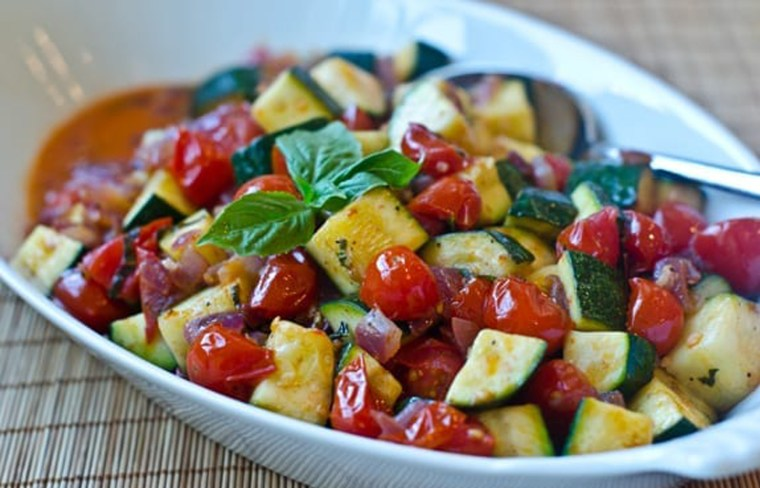

Easy Zucchini-Tomato Side Dish

Description
This quick and easy vegetable dish can be served as a side or as a vegetarian main with rice or pasta. I could eat it all by myself, but I put down 2 servings.
Ingredients
- 2 tablespoons olive oil
- 1 small onion, chopped
- 1 clove garlic, minced
- 2 small zucchini, cubed
- 1 teaspoon tomato paste/li>
- 1 beefsteak tomato, cubed
- 1 teaspoon herbes de Provence, or more to taste
- salt and freshly ground black pepper to taste
- 1 pinch white sugar
- 1 tablespoon chopped fresh basil leaves, or to taste
Steps
- Heat olive oil in a large skillet over medium heat and cook onion until soft and translucent, 3 to 5 minutes. Add garlic and cook for 30 seconds. Add zucchini and cook until softened, about 3 minutes.
- Stir in tomato paste and tomato. Season with herbes de Provence, salt, black pepper, and sugar. Stir in basil and serve.